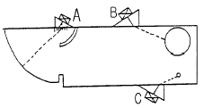
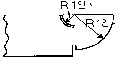
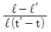
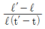
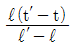
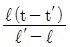

초음파비파괴검사산업기사(구) (2004-09-05 기출문제)
1과목: 초음파탐상시험원리
1. 초음파탐상시험 중 수직탐상에 대해 기술한 것으로 올바른 것은?
- 동일 결함으로부터의 에코가 CRT상에 나타나는 위치는 파장의 장단에 관계한다.
- 결함 에코의 상승위치로부터 결함크기를 알 수 있다.
- 저면에 의한 다중반사 도형으로부터 시험체의 밀도를 알 수 있다.
- 결함이 없으면 CRT상에는 저면 에코만이 나타난다.
(정답률: 알수없음)

2. 여러 종류의 비파괴검사의 특징에 대해 기술한 것이다. 올바른 것은?
- 외관시험은 비파괴검사의 한 가지이다.
- 누설자속시험은 압력용기의 물의 높이를 검지하는 것에 적합한 시험방법이다.
- 자분탐상시험은 섬유강화 복합재료의 접촉불량 부분을 검출하는데 적합하다.
- 침투탐상시험은 오스테나이트계 스테인레스강의 비드중에 내재하고 있는 미세한 균열을 검출하는데 적합한 시험방법이다.
(정답률: 알수없음)
3. 시험재의 결정 입자가 클 때 다음 중 가장 크게 영향을 받는 것은?
- 감쇠변화
- 파형변이
- 진동자 수명단축
- 음속변화
(정답률: 알수없음)
4. 다음은 비파괴시험의 안전관리에 대해 기술한 것이다. 올바른 것은?
- 방사선투과시험에서 취급하는 방사선이 그다지 강하지 않는 경우에는 안전관리에 특히 유의할 필요가 없다.
- 초음파탐상시험에서 취급하는 초음파가 강력한 경우에는 유자격자에 의한 관리, 지도가 의무화되어 있다.
- 형광자분이나 형광침투액을 이용하는 자분탐상시험이나 침투탐상에서 자외선조사등의 자외선이 눈에 직접들어가도 전혀 해롭지 않다.
- 유기용제를 사용하는 침투탐상시험에서는 방화대책이나 환기 등의 안전관리에 특히 주의할 필요가 있다.
(정답률: 알수없음)
5. 판파는 어떠한 결함을 검출하는데 유용한가?
- 박판재료의 내.외부 결함 평가
- 후판 용접부의 중앙에 있는 용입부족
- 이음매에 잔존하는 내부 공동
- 후판의 두께 측정
(정답률: 알수없음)
6. 공칭 굴절각이 70° 인 탐촉자로 STB-Al시험편을 이용하여 굴절각을 확인하고자 할 때 빔 거리가 60mm인 곳에서 최대 에코를 얻었다면 이 탐촉자의 실측 굴절각은?
- 60.0도
- 63.4도
- 69.3도
- 75.0도
(정답률: 알수없음)
7. 제 1임계각 이내의 각도로 물에서 강재로 종파가 전달되었을 때 횡파의 굴절각은 어떻게 되겠는가?
- 종파의 굴절각보다 작아진다.
- 종파의 굴절각과 같다.
- 종파의 굴절각보다 커진다.
- 존재하지 않는다.
(정답률: 알수없음)
8. 어떤 제품을 초음파탐상한 결과 CRT상에 높이가 낮은 지시가 아주 많이 나타나게 되었다. 이와 같은 지시의 주된 원인이 되는 것은?
- 미세한 입자로 된 재질 때문
- 결정입자의 조대화 때문
- 균일한 접촉매질의 사용
- 균열의 발생
(정답률: 알수없음)
9. 종파 수직탐상 수행시 허위지시로 오판독할 수 있는 에코가 아닌 것은?
- 저면에코
- 지연에코
- 임상에코
- 잔류에코
(정답률: 알수없음)
10. STB-A1 시험편으로 성능검사가 가능하지 않는 것은?
- 분해능
- 측정범위
- 굴절각 확인
- 주파수 측정
(정답률: 알수없음)
11. 어떤 매질1의 음향임피던스값이 1x106g/cm2.sec, 매질2의 음향임피던스값이 3x106g/cm2.sec일 때 초음파가 매질1에서 매질2로 수직입사할 때 음압통과율은 얼마인가? (단, 이때 초음파의 진행에 따른 감쇠는 없는 것으로 가정)
- 0.25
- 0.5
- 0.75
- 1.0
(정답률: 알수없음)
12. 빔 분산각 θ가 원형진동자의 직경과 파장의 변화에 따라 감소되는 것을 적절히 나타낸 것은?
- 직경 D가 작을수록, 파장 λ가 작을수록 분산각 θ는 작아진다.
- 직경 D가 클수록, 파장λ가 클수록 분산각 θ는 작아진다.
- 직경 D가 클수록, 파장 λ가 작을수록 분산각 θ는 작아진다.
- 직경 D가 작을수록, 파장 λ가 클수록 분산각 θ는 작아진다.
(정답률: 알수없음)
13. 직경이 12.5mm, 주파수가 2.25MHz인 탐촉자의 수중에서의 빔의 분산각은? (단, 물에서의 속도는 1430m/sec)
- 2.6°
- 3.6°
- 4.6°
- 5.6°
(정답률: 알수없음)
14. 다음 중 자분탐상시험에 가장 적합한 재료는?
- 상자성체
- 강자성체
- 비자성체
- 역자성체
(정답률: 알수없음)
15. 단강품을 2M㎐로 초음파탐상시험하였더니 전체적으로 임상에코가 높게 나타나고 저면에코가 충분히 나타나지 않았다. 바른 조치 방법은?
- 탐상감도를 높인다.
- 탐촉자의 주파수를 높인다.
- 탐상감도를 낮춘다.
- 탐촉자의 주파수를 낮춘다.
(정답률: 알수없음)
16. 초음파탐상 장치의 브라운 관에 나타나는 에코 높이는 무엇에 비례하는가?
- 진동수
- 펄스 반복수
- 음압
- 주파수
(정답률: 알수없음)
17. 초음파탐상시험의 적용 예에 대해 기술한 것으로 올바른 것은?
- 강판의 라미네이션 탐상에는 주로 경사각탐상이 이용된다.
- 강의 맞대기용접부 탐상에는 주로 수직탐상이 이용된다.
- 모서리 이음이나 T이음 등의 용접부에서 수직탐상이 유효한 경우에는 그것을 병용한다.
- 파이프 등의 내면의 부식량 계측에는 스트레인 계측이 이용된다.
(정답률: 알수없음)
18. 수침법에서 시험체에 횡파를 발생시키는 가장 보편적인 방법은?
- Y-Cut 결정체를 사용한다.
- 시험체의 입사면에 수직인 종파를 입사시킨다.
- 다른 주파수로 진동하는 두 개의 결정체를 사용한다.
- 진동자를 고정시킨 장치의 각도를 적절히 변화시킨다.
(정답률: 알수없음)
19. 다음 중 재료의 잔류응력 측정에 가장 유용한 시험법은?
- 형광 X선법
- X선 회절법
- 레이저 프로브법
- 이온 프로브법
(정답률: 알수없음)
20. 다음 중 비파괴시험을 위한 검사 매개체가 아닌 것은?
- 방사성 동위원소
- 초음파
- 와전류
- 선팽창계수
(정답률: 알수없음)
2과목: 초음파탐상검사
21. 다음 중 경사각 탐상시의 탐상감도 조정에 사용할수 없는 시험편은?
- IIW
- STB-A3
- STB-G-V5
- RB-A6
(정답률: 알수없음)
22. 초음파 탐상장비 중 결함으로부터 반사되는 신호크기와 전파시간을 CRT상에 표현하는 탐상 방법은?
- A-scan
- B-scan
- C-scan
- MA-scope
(정답률: 알수없음)
23. 초음파탐상기에 사용하는 1진동자 및 2진동자 탐촉자에 대해 기술한 것이다. 틀린 것은?
- 통상 1진동자수직 탐촉자는 송신펄스폭이 넓기 때문에 근거리의 탐상이 어렵다.
- 2진동자탐촉자는 근거리 결함의 탐상에 유리하다.
- 2진동자에 의한 탐상도형에는 지연재 때문에 표면 에코가 나타난다.
- 1진동자수직 탐촉자에 의한 직접 접촉법의 탐상도형에도 표면에코를 관측할 수 있다.
(정답률: 알수없음)
24. 다음 중 탐상에 지장을 주는 방해 에코가 발생하는 경우가 아닌 것은?
- 펄스 반복율이 매우 높을 때
- 결정립이 조대한 시험체를 고감도로 검사할 때
- 굴절각이 큰 경우 빔 퍼짐이 발생할 때
- 음향임피던스가 제로(0)인 경우
(정답률: 알수없음)
25. 점집속에 사용되는 음향집속 방법이 아닌 것은?
- 구면진동자
- 음향렌즈
- 평면진동자
- 배열형 진동자
(정답률: 알수없음)
26. 강판의 결함에 대한 초음파탐상시험의 설명중 올바른 것은?
- 강판의 결함은 내부결함과 표면결함이 있으나 초음파탐상의 대상이 되는 것은 표면결함 뿐이다.
- BF는 결함의 어떤 부분의 저면에코이고, BG는 STB-G의 저면에코이다.
- 수직탐상에서는 경사각탐상과 다르게 빔 진행거리가 길어지더라도 결함에코높이는 변하지 않는다.
- 수직탐상에서 탐상감도를 조정하는 방법은 저면에코방식과 시험편방식의 2종류가 있다.
(정답률: 알수없음)
27. 초음파탐상용 탐촉자에서 진동자의 뒷면 흡음재의 기능에 대한 설명으로 틀린 것은?
- 진동자에 진동을 잘 멈추게 한다.
- 에너지를 흡수하게 한다.
- 진동자와 흡음재의 접착이 나빠지면 펄스폭이 좁아진다.
- 진동자와 흡음재의 접착이 나빠지면 감도가 좋아진다.
(정답률: 알수없음)
28. 경사각탐상시 동일한 빔 진행거리에서 시편 두께가 증가할수록 스킵(skip)수의 변화는?
- 증가한다.
- 감소한다.
- 1/4씩 감소한다.
- 변하지 않는다.
(정답률: 알수없음)
29. 용접부 탐상을 1탐촉자법으로 할 때 주로 적용되는 주사방법이 아닌 것은?
- 투과주사
- 전후주사
- 좌우주사
- 진자주사
(정답률: 알수없음)
30. 점집속형(line focus type) 수직탐촉자의 최대 장점은?
- 파형변이(mode conversion)가 일어나기 쉽다.
- 초음파 빔이 탐상면으로부터 어느 일정한 거리에 집속되기 때문에 거리분해능이 우수하다.
- 특히 고온에서의 사용이 가능하다.
- 파형변이(mode conversion)의 영향을 받기 쉬우며 수신효율이 우수하다.
(정답률: 알수없음)
31. 수침법의 경우 가장 많이 쓰는 접촉 매질은?
- 물
- 오일
- 알콜
- 그리세린
(정답률: 알수없음)
32. 적산효과란 어떤 시험체의 초음파탐상검사시 나타날 수 있는 현상인가?
- 판재
- 맞대기 용접된 용입부
- 대형 주강품
- 형상이 복잡한 단조품
(정답률: 알수없음)
33. STB-A2 시험편에 존재하지 않는 인공흠은?
- 직경 1mm인 평저공
- 직경 1.5mm인 관통구멍
- 직경 2mm인 관통구멍
- 직경 8mm인 평저공
(정답률: 알수없음)
34. 초음파탐상시험 작업자가 장비의 게인을 18dB 올려 놓았다면 시험장치의 증폭인자는 얼마만큼 변했는가?
- 증폭비가 4:1로 증가한다.
- 증폭비가 1:4로 줄어든다.
- 증폭비가 8:1로 증가한다.
- 증폭비가 1:8로 줄어든다.
(정답률: 알수없음)
35. 그림에서 A 탐촉자는 무엇을 하기 위함인가?

- 탐촉자 쐐기의 각도 보정
- 감도(sensitivity)보정
- 입사각도 측정
- 입사점 측정
(정답률: 알수없음)
36. 모재 두께 20mm인 용접부를 45° 경사각탐촉자를 이용하여 탐상했을 때 초음파빔 거리 50mm에서 결함이 검출되었다면, 이 결함은 탐촉자 입사점으로부터 모재 표면을 따라 얼마 거리(탐촉자-결함 거리)에 존재하는가? (단, sin45° = 0.71)
- 14.2mm
- 28.1mm
- 35.5mm
- 70.4mm
(정답률: 알수없음)
37. 펄스반사법에서 초음파 빔에 대한 피검체에 의한 변수가 아닌 것은?
- 표면 거칠기
- 시험체내의 파형변화
- 초음파 음장
- 결함의 방향성
(정답률: 알수없음)
38. 알루미늄의 음향임피던스는 얼마인가? (단, 알루미늄 밀도 : 2700kg/m3, 종파속도 : 6320m/sec, 횡파속도 : 3130m/sec이다.)
- 8.5x106kg/m2∙sec
- 17x106kg/m2∙sec
- 8.5x107kg/m2∙sec
- 17x107kg/m2∙sec
(정답률: 알수없음)
39. 감쇠가 적은 재료를 펄스 반복주파수가 높은 탐상기로 탐상할 때 측정범위내에서 원래의 거리보다 가까운 거리에 있는 것 같이 에코가 나타나서 결함에코로 착각할 수 있는 것은?
- 다중 저면반사
- 다중 탐상면 반사
- 잡음파
- 고스트에코
(정답률: 알수없음)
40. 초음파 탐상장치를 사용할 때 송신펄스 위치는 영점에서 나타나고, 구간당 거리가 10mm인 상태를 구간당 거리 20mm로 조정하고 싶다면 어느 것을 조정해야 하는가?
- 소인지연(Sweep delay) 조정
- 스위프 길이(Sweep length) 조정
- 측정범위 조정
- 탐촉자의 종류
(정답률: 알수없음)
3과목: 초음파탐상관련규격 및 컴퓨터활용
41. KS D 0233(압력용기용 강판의 초음파탐상검사)에 따른 용접부의 단면 결함(단면 또는 그 부근에서 판의 내부를 향하여 전이를 가진 결함)보수시 제거 부분은 판 단면에서의 거리가 몇 mm이내로 하여야 하는가?
- 50mm
- 40mm
- 30mm
- 20mm
(정답률: 알수없음)
42. KS B 0896에서 1회 반사법의 경우 탐촉자-결함거리는 대략 어느 정도인가?
- 0∼0.5 S
- 0.5∼1.0 S
- 1.0∼1.5 S
- 1.5∼3.0 S
(정답률: 알수없음)
43. 다음 도메인 이름 중에서 기관식별코드가 교육기관에 속한 사이트의 이름으로 맞는 것은?
- ddd.univ.co.kr
- db.ccc.eq.kr
- aaa.bbb.ac.kr
- ftp.univ.go.kr
(정답률: 알수없음)
44. ASME 규격에서 요구하는 장치의 증폭직선성의 일반적인 허용범위내로서 맞게 된 것은?
- 50%의 스크린 높이에서 전스크린 높이의 ± 10% 이내
- 85%의 스크린 높이에서 전스크린 높이의 ± 3% 이내
- 50%의 스크린 높이에서 전스크린 높이의 ± 5% 이내
- 85%의 스크린 높이에서 전스크린 높이의 ± 10% 이내
(정답률: 알수없음)
45. 다음 중 파워포인트에서 제공하는 화면 전환 기능이 아닌 것은?
- 개요보기
- 슬라이드 노트
- 슬라이드 쇼
- 미리보기
(정답률: 알수없음)
46. ASME Sev.V, Art.5에 따라 용접부를 초음파탐상검사할 때 DAC(거리진폭교정곡선)의 몇 %를 초과하는 흠지시에 대하여 적용 코드에 따라 합부 판정 평가를 하는가?
- 10%
- 20%
- 50%
- 100%
(정답률: 알수없음)
47. ASME code에 의한 초음파탐상시험시 주강품을 검사할 때 수정조작(transfer method)을 사용하는데 다음 설명 중 옳지 않은 것은?
- 교정시 사용하는 시편과 검사시편의 음향감쇠의 차이를 보정하기 위해 사용한다.
- 비교 반사체로서 평저공 등을 사용한다.
- 수정(transfer)에 사용되는 단위는 dB 또는 스크린%이다.
- 저면 반사가 50%이상 손실을 나타내는 영역은 재시험한다.
(정답률: 알수없음)
48. 초음파 경사각탐상용 A1형 표준시험편(STB-A1) ø50 구멍의 경사각탐촉자에 대한 사용 목적은?
- 분해능 측정
- 감도 조정
- 거리진폭특성 측정
- 굴절각 측정
(정답률: 알수없음)
49. KS 규격에 따라 강용접부의 초음파탐상시 경사각탐촉자의 입사점, 굴절각 및 불감대 측정은 다음 중 어느 주기마다 점검하여야 하는가?
- 입사점과 굴절각은 작업개시 및 4시간마다 불감대는 작업개시마다
- 입사점과 굴절각은 작업개시 및 4시간마다 불감대는 구입시 혹은 보수를 한 직후
- 입사점과 굴절각은 작업개시 및 8시간마다 불감대는 작업개시마다
- 입사점과 굴절각은 작업개시 및 8시간마다 불감대는 구입시 혹은 보수를 한 직후
(정답률: 알수없음)
50. KS B 0896에서 빔 행정에 대한 에코 높이의 변화를 표시한 그래프는?
- 검출 레벨 곡선
- 결함위치 및 거리곡선
- 거리진폭 특성곡선
- 에코 영역
(정답률: 알수없음)
51. KS B 0897에 의한 탐상기의 설명으로 잘못된 것은?
- 탐상기는 송수신절환이 1탐촉자법으로만 사용할 수 있어야 한다.
- 탐상기는 주파수 5MHz로 작동하여야 한다.
- 탐상기의 증폭 직선성은 ±3% 이내여야 한다.
- 탐상기의 시간축 직선성은 ±1% 이내여야 한다.
(정답률: 알수없음)
52. ASME Sec.V의 강판에 대한 경사각탐상 기준인 SA-577에서 결함증상이 보일 때 그 부위를 중심으로 얼마의 넓이를 100% 검토하라고 하였는가? (단, in은 인치)
- 7 in2
- 8 in2
- 9 in2
- 10 in2
(정답률: 알수없음)
53. 서버를 직접 운용할 수 없는 중소기업이나 개인이 서버의 일부분을 임대하여 웹 사이트를 운영하도록 하는 서비스는?
- 웹 호스팅
- 로밍 서비스
- 서버 호스팅
- 웹 블루투스
(정답률: 알수없음)
54. MIL I 8950B에 의한 초음파탐상시험시 교정하여 최대에코를 얻었을 때 AA 영역이란?
- 1/64"의 평저공에서 얻은 에코보다 높은 에코가 없을 때
- 1/32"의 평저공에서 얻은 에코보다 높은 에코가 없을 때
- 3/64"의 평저공에서 얻은 에코보다 높은 에코가 없을 때
- 5/64"의 평저공에서 얻은 에코보다 높은 에코가 없을 때
(정답률: 알수없음)
55. KS B ⑤34에 따라 경사각 탐촉자의 감도를 측정할 때 측정 조건으로 틀린 것은?
- 리젝션은 0 또는 off로 한다.
- 탐상기의 펄스 너비를 가능한 한 좁게 한다.
- 기준감도는 전기적 잡음이 눈금판의 10%이하일 때로 정한다.
- 게인 조정기는 탐촉자를 초음파 탐상기에 접속한 채로 한다.
(정답률: 알수없음)
56. PC의 바이어스(BIOS)에 대한 설명으로 올바른 것은?
- 바이어스는 컴퓨터의 입출력장치, 메모리 등 하드웨어를 관리하는 프로그램이다.
- 컴퓨터의 보조기억장치에 저장되어 있다.
- 바이러스를 막을 수 있다.
- 인터넷의 속도를 향상시킬 수 있다.
(정답률: 알수없음)
57. KS D 0233 압력용기용 강판의 초음파탐상검사에 따른 내부결함 보수시 제거부분의 깊이는 공칭 판 두께의 몇 %이내로 하여야 하는가?
- 10%
- 15%
- 20%
- 25%
(정답률: 알수없음)
58. 다음 중 컴퓨터간의 통신을 위한 소프트웨어는?
- 클리퍼
- 페이지메이커
- 이야기
- 바이로봇
(정답률: 알수없음)
59. 70° 의 굴절각을 갖는 탐촉자를 사용, IIW Type 1 Block으로 거리보정(시간축 보정)을 할 경우 화면 상의 2번째 반사신호는 빔노정 거리가 얼마이겠는가?

- 8인치
- 9인치
- 10인치
- 12인치
(정답률: 알수없음)
60. KS B 0897에 규정된 탐상장치 및 부속품에 대한 설명으로 그 내용이 올바르게 기술된 것은?
- 사용되는 공칭주파수는 5MHz이다.
- 탐상기의 시간축의 직선성은 실물 크기의 5% 이내 이어야 한다.
- 경사각탐촉자의 양측에는 적어도 10mm의 범위에 2mm의 간격으로 유도눈금이 새겨져야 한다.
- 경사각탐촉자의 공칭굴절각은 35°, 50°, 70° 중의 하나여야 한다.
(정답률: 알수없음)
4과목: 금속재료 및 용접일반
61. 청정효과(cleaning action)는 금속표면의 산화 피막을 자동적으로 제거하는 특성으로 다음 중 어느 용접에서 가장 많이 생기는 효과인가?
- 원자수소 용접
- 탄산가스 아크 용접
- 서브머지드 아크 용접
- 불활성 가스 금속 아크 용접
(정답률: 알수없음)
62. 금속에 대한 설명 중 틀린 것은?
- 비중 약 5이상의 금속을 중금속이라 하며 Aℓ, Ni, Ti, Cu, Mg 등이 이에 속한다.
- 금속이 갖는 특성 중 연성 및 전성이 좋다는 것은 소성변형능이 큰 것을 나타낸다.
- 금속적 성질과 비금속적 성질을 같이 나타내는 것을 아금속(metalloid)이라 한다.
- 일반적으로 융점이 높은 금속은 비중도 크다.
(정답률: 알수없음)
63. 열팽창 계수가 대단히 적고 내식성도 좋아 표준척, 시계추, 바이메탈 등에 사용되는 합금은?
- 퍼말로이(Permalloy)
- 콘스탄탄(Constantan)
- 모넬메탈(Monel metal)
- 인바(Invar)
(정답률: 알수없음)
64. 스테인리스강의 미그(MIG) 용접에서 사용되는 보호가스(Shielding gas)로 가장 적합한 것은?
- N2
- CO2
- O2
- 98% Ar + 2% O2
(정답률: 알수없음)
65. 후크의 법칙이 적용되는 한계는?
- 연신한도
- 탄성한도
- 항복점
- 파단점
(정답률: 알수없음)
66. 가스 용접시 팁 끝이 순간적으로 막히면 가스의 분출이 나빠지고 토치의 가스 혼합실까지 불꽃이 도달되어 토치가 빨갛게 달구어지는 현상을 무엇이라 하는가?
- 역류
- 역화
- 인화
- 점화
(정답률: 알수없음)
67. 온도 t ℃에서 길이 ℓ 인 봉을 온도 t‘℃로 올릴 때 길이가 ℓ 잭로 팽창했다면 이 때의 열팽창 계수는?




(정답률: 알수없음)
68. 전기동을 진공이나 무산화분위기에서 정련 주조한 것으로 진공관 또는 전자기기용으로 사용되는 것은?
- 전로동
- 제련동
- 무산소동
- 강인동
(정답률: 알수없음)
69. 오스테나이트계 스테인리스강의 특징이 아닌 것은?
- 내식성이 우수하다.
- 강자성체이며 인성이 나쁘다.
- 가공이 쉽고 용접도 용이하다.
- 염산, 염소가스, 황산 등에 의해 입계부식이 생기기 쉽다.
(정답률: 알수없음)
70. 다음 원소 중 비중이 가장 큰 것은?
- V
- Sb
- Mo
- Mn
(정답률: 알수없음)
71. 아크전류가 200A, 아크전압 25V, 용접속도 15cm/min일 때 용접 단위길이 1cm당 발생하는 용접입열은 얼마인가?
- 15000 J/cm
- 20000 J/cm
- 25000 J/ cm
- 30000 J/cm
(정답률: 알수없음)
72. 탄소강 중에 함유되어 인장강도, 탄성한계, 경도를 상승시키며 연신율과 충격값을 감소시키는 것은?
- Sn
- Si
- Pb
- S
(정답률: 알수없음)
73. 용접봉 기호 E 4316 에서 E 의 의미로 가장 적합한 것은?
- 아크 안정제
- 용접자세
- 가스 용접봉
- 피복 아크 용접봉
(정답률: 알수없음)
74. 구조용 복합 재료에서 FRM이란?
- 비정질합금
- 수소저장합금
- 형상기억합금
- 섬유강화금속
(정답률: 알수없음)
75. 맞대기 용접에 대한 필릿 용접이음의 비교 설명으로 틀린 것은?
- 맞대기 용접보다 현장 조립시 좋다.
- 맞대기 용접보다 용접 결함이 생기기 쉽다.
- 맞대기 용접보다 변형 및 잔류응력이 크다.
- 맞대기 용접보다 부식에 영향을 많이 받는다.
(정답률: 알수없음)
76. 외적 구속이 없고 주변이 자유인 맞대기 용접이음의 잔류응력 분포에서 가장 큰 잔류응력을 가진 부분인 것은?
- 용접중심부
- 열영향부
- 본드(bond)부
- 모재부
(정답률: 알수없음)
77. 심용접의 종류 중 심부의 겹침을 모재 두께 정도로 하여 겹쳐진 폭 전체를 가압하여 결합하는 방법은?
- 맞대기 심 용접(butt seam welding)
- 매시 심 용접(mash seam welding)
- 포일 심 용접(foil seam welding)
- 다전극 심 용접(multi seam welding)
(정답률: 알수없음)
78. 아크용접에서 직류 정극성으로 용접할 경우 모재의 용입에 대한 역극성과의 비교 설명으로 올바른 것은?
- 두께에 따라 다르다.
- 직류 역극성보다 얇다.
- 직류 역극성보다 깊다.
- 역극성과 정극성이 같다.
(정답률: 알수없음)
79. 열전대용 합금이 아닌 것은?
- 구리 - 콘스탄탄
- 크로멜 - 알루멜
- 실루민 - 알펙스
- 백금 - 백금로듐
(정답률: 알수없음)
80. 표면의 균열, 홈, 핀홀(pin hole) 등 결함에 대하여만 유효한 방법으로 특히 비자성 재료의 표면검출에 효과가 있으며, 육안으로 결함의 크기를 식별할 수 있는 검사법은?
- 침투탐상법
- 자분탐상법
- 초음파탐상법
- 방사선투과법
(정답률: 알수없음)
수직탐상은 결함이 수직으로 위치한 경우에 사용되며, 결함이 없는 부분에서는 저면에 의한 다중반사 도형이 나타나고, 결함이 있는 부분에서는 결함에 의한 에코가 나타납니다. 이때, 동일한 결함으로부터의 에코가 CRT상에 나타나는 위치는 파장의 장단에 관계하게 되는데, 이는 파장이 짧을수록 결함에서 반사된 에코가 CRT상에서 더 높은 위치에 나타나기 때문입니다. 따라서, 결함이 없는 경우에는 저면 에코만이 나타나게 됩니다.